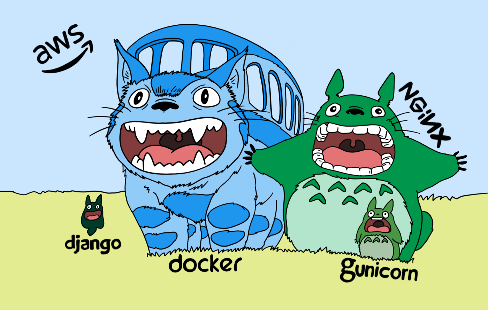

Dockerizing Django Application — Gunicorn and Nginx
·
Django Rango·
#Django
#AWS
#Docker 5 min read
5 min read

Totoro — With logo colors (AWS, Docker, Nginx, Guinicorn, and Django)
A step-by-step tutorial on dockerizing a Django application with MySQL database using Guinicorn and Nginx.
This post assumes that you have some familiarity with Django and likely have a local Django development project, and looking at how to deploy the project in production.
In the later section of the post, we’ll see how to deploy the project on AWS EC2.
Checklist 🚧
- Check if the application is running in your local machine: python manage.py runserver, accessible at
http://localhost:8000 - Don’t forget to run:
python manage.py makemigrations,python manage.py migrate, andpython manage.py collectstatic
The plan 🛠
- We cannot use the Django development server on production; it’s meant for local development and cannot handle concurrent requests – this is why we’ll use a combination of Guinicorn and Nginx.
- Create docker-file(s) for the Django application running in port 8000 and use Nginx to proxy the incoming request at port 80 to port 8000.
- A docker-compose file to put it all together, define the network, links, and volumes to server static and media files.
A Dockerfile for the Django application 💻
- Make sure you have the requirements.txt file with all the dependencies. You can generate one with: pip freeze > requirements.txt
- The example Dockerfile below is for a Django Application with MySQL database and might need minor changes for other DBs.
FROM ubuntu:20.04
ADD . /app
WORKDIR /app
RUN apt-get update -y
RUN apt-get install software-properties-common -y
RUN add-apt-repository ppa:deadsnakes/ppa
RUN apt-get install python3.9 -y
RUN apt-get install python3-pip -y
RUN python3.9 -m pip install --upgrade setuptools
RUN apt-get install sudo ufw build-essential libpq-dev python3.9-dev libmysqlclient-dev default-libmysqlclient-dev libpython3.9-dev -y
RUN python3.9 -m pip install -r requirements.txt
RUN python3.9 -m pip install psycopg2-binary
RUN sudo ufw allow 8000
EXPOSE 8000
At the time of writing this post, Ubuntu:20.04 and python:3.9 are the stable latest versions. Place the docker file at the root of the project, in the same directory as manage.py
A Dockerfile for Nginx 📄
- Create a directory nginx with two files: Dockerfile and default.conf (the directory name can be anything).
- The contents of these two files are as follows:
FROM nginx:stable-alpine
COPY default.conf /etc/nginx
COPY default.conf /etc/nginx/conf.d
EXPOSE 80
server {
listen 80 default_server;
server_name _;
location / {
proxy_pass http://web:8000;
proxy_set_header X-Forwarded-For $proxy_add_x_forwarded_for;
proxy_set_header Host $host;
proxy_redirect off;
}
location /static/ {
alias /app/static/;
}
location /media/ {
alias /app/static/;
}
}
Why is it proxy_pass http://web:8000? We’ll come to that in a second.
The docker-compose file 📄
Even before pushing the image to the Docker hub, the best practice is to test the application a couple of times by building the docker image locally. Hence, two docker-compose files, one of local development 🛺 and the other for production use ✈️.
version: '3.8'
services:
web:
build:
context: .
command: gunicorn --bind 0.0.0.0:8000 <project-name>.wsgi --workers=4
volumes:
- static_volume:/app/static
- media_volume:/app/media
expose:
- "8000"
networks:
- django-network
nginx:
build: nginx
restart: always
volumes:
- static_volume:/app/static
- media_volume:/app/media
ports:
- "80:80"
depends_on:
- web
networks:
- django-network
networks:
django-network:
name: django-network
volumes:
media_volume:
static_volume:
Command to start the docker containers: docker-compose up -f docker-compose.dev.yml
Note:
webrefers to the Django web application, the name of the service can be anything, but ensure to reference the same name in the nginx configuration file.- Ideally, we would want to serve static content (HTML and CSS) from CDN for faster content delivery and not from the EC2 instance (covered that in a follow-up post).
- Instead of using the default network, it’s better to define an explicit network, such as django-network
- Notice that the service web has expose and not ports; expose ensures that the port 8000 is accessible only within the local network and not from the host machine (outside world).
Similarly, for production use, build and push the Django and Nginx images to the Docker hub (make sure not to include sensitive information by using .dockerignore)
*.pyc
migrations/
__pycache__
db.sqlite3
.idea
*.DS_Store
.env
static
Run at the project’s root (same level of manage.py): docker build -t <docker-username>/<project-name>:<tag|latest> . and docker push <docker-username>/<project-name>:<tag|latest>
Run inside the nginx directory created earlier: docker build -t <docker-username>/<nginx-for-project-name>:<tag|latest> . and docker push <docker-username>/<nginx-for-project-name>:<tag|latest>
The docker-compose file for production use would look like:
version: '3.8'
services:
web:
image: <docker-username>/<project-name>:<tag|latest>
command: gunicorn --bind 0.0.0.0:8000 licensing_platform.wsgi --workers=4
volumes:
- static_volume:/app/static
- media_volume:/app/media
expose:
- "8000"
networks:
- django-network
nginx:
image: <docker-username>/<nginx-for-project-name>:<tag|latest>
restart: always
volumes:
- static_volume:/app/static
- media_volume:/app/media
ports:
- "80:80"
depends_on:
- web
networks:
- django-network
networks:
django-network:
name: django-network
volumes:
media_volume:
static_volume:
The only change here is to use the images from the docker hub rather than building them locally.
Command to start the docker containers: docker-compose up
Use the -d flag to run in the background: docker-compose -d up
You are good to go; for using the env variables inside the container, I prefer explicitly mentioning the env variables to be used in the docker containers that are in the host machine, so the docker-compose file:
version: '3.8'
services:
web:
image: <docker-username>/<project-name>:<tag|latest>
command: gunicorn --bind 0.0.0.0:8000 licensing_platform.wsgi --workers=4
environment:
- DEBUG
- DATABASE_NAME
- DATABASE_USER
- DATABASE_PASSWORD
- HOST_ENDPOINT
- REDIS_LOCATION
volumes:
- static_volume:/app/static
- media_volume:/app/media
expose:
- "8000"
networks:
- django-network
nginx:
image: <docker-username>/<nginx-for-project-name>:<tag|latest>
restart: always
volumes:
- static_volume:/app/static
- media_volume:/app/media
ports:
- "80:80"
depends_on:
- web
networks:
- django-network
networks:
django-network:
name: django-network
volumes:
media_volume:
static_volume:
To access the local MySQL server (to test on local machine), the host-name: host.docker.internal
For production, use AWS RDS – MySQL with the proper inbound traffic rules in the security group of the EC2 instance(s).
DEBUG=True
DATABASE_NAME = ''
DATABASE_USER = ''
DATABASE_PASSWORD = ''
HOST_ENDPOINT = 'host.docker.internal'
REDIS_LOCATION = 'redis://127.0.0.1:6379/'
Wohoo 🚀 Launch ready!
Everything is a lot easier if there’s a project for reference; here it is: licensing-as-a-platform
Deployment – EC2
- While it’s much easier to use ECS, I prefer not to get confined to using managed services of a cloud provider.
- It’s simple, launch an EC2 instance, install Docker Engine and Docker Compose and create an AMI; this would be your Docker AMI.
- Terminate and Launch a new instance with Docker AMI previously created as the base AMI for EC2, configure as per your need, include the necessary user data, import docker-compose.yml (most likely by git), and run docker-compose up.
- You will, of course, have to write a shell script to automate the launch of EC2 instances.
Typically, create an ALB (Application Load Balancer) with a target group and auto-scaling group 🚁
I will soon write a follow-up post covering AMI, EC2, RDS, ALB, VPC, Security groups, and everything else necessary for a scalable web application.

Cite this article as: Adesh Nalpet Adimurthy. (Feb 11, 2022). Dockerizing Django Application — Gunicorn and Nginx. PyBlog. https://www.pyblog.xyz/dockerize-django
 #index
#index